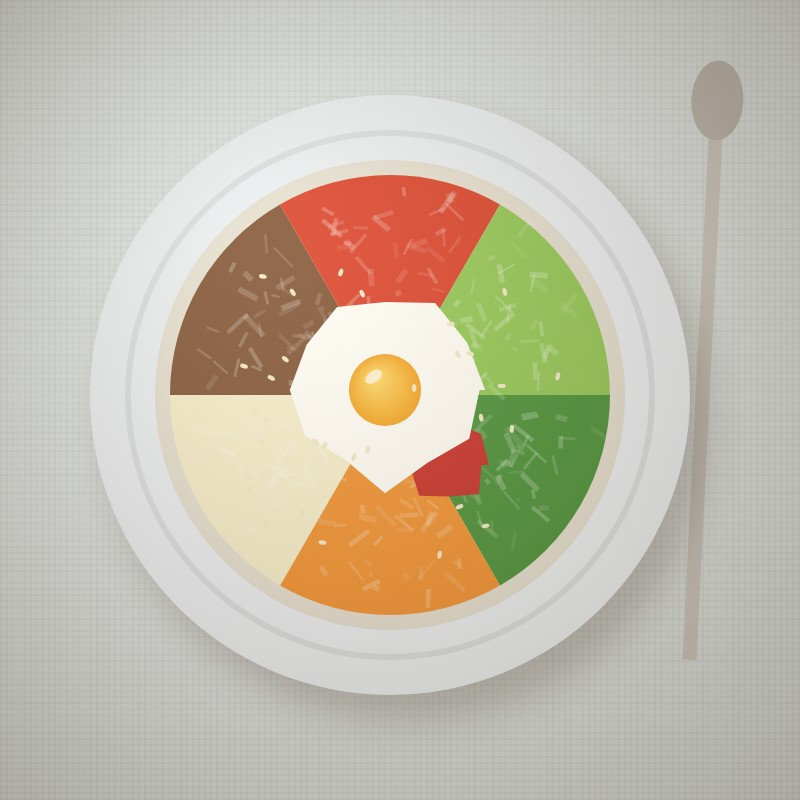
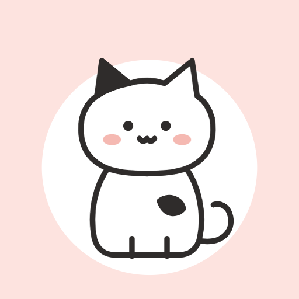

<!doctype html>
<html lang="ko">
<head>
<meta charset="utf-8">
<title>Mealcat 소개 영상</title>
<!-- 40초 세로 영상(1080×1920). seek(t)가 한 프레임을 그리고, renderAudio()가 같은 타임라인(T)으로 소리를 만든다. render.js가 둘을 MP4로 묶음 -->
<link href="https://fonts.googleapis.com/css2?family=Gaegu:wght@400;700&family=Gowun+Dodum&family=Jua&display=block" rel="stylesheet">
<style>
:root{--paper:#fff;--ink:#2f2c2b;--pencil:#8f8984;--line:#e7e3df;--blush:#f5b9b2;--blush-soft:#fde3df;--butter:#fff3c4}
*{box-sizing:border-box}
html,body{margin:0;width:1080px;height:1920px;overflow:hidden;background:var(--paper);color:var(--ink);font-family:'Gowun Dodum',sans-serif}
#stage{position:absolute;inset:0;overflow:hidden}
.abs{position:absolute;left:0;top:0;will-change:transform}
.dd{fill:none;stroke:var(--ink);stroke-width:1.6;stroke-linecap:round;stroke-linejoin:round;filter:url(#pen);overflow:visible}
.scene{position:absolute;inset:0;display:none}
.bg{position:absolute;inset:0}
.paper{background:#fff url() repeat}
.cap{position:absolute;left:0;right:0;text-align:center;font:400 92px/1.15 Jua,sans-serif;letter-spacing:-1px;white-space:nowrap}
.cap span{display:inline-block;white-space:pre}
.cap .hl{position:absolute;height:34px;bottom:4px;background:var(--blush);border-radius:18px;transform-origin:left center;z-index:-1;opacity:.75}
.sub{position:absolute;left:0;right:0;text-align:center;font:400 52px Jua,sans-serif;color:#6e6863}
.phone{position:absolute;width:672px;height:1417px;left:204px;top:440px;border-radius:86px;background:var(--ink);padding:16px;box-shadow:0 40px 80px rgba(47,44,43,.25),0 0 0 6px #fff inset}
.screen{position:relative;width:640px;height:1385px;border-radius:72px;overflow:hidden;background:#fff}
.notch{position:absolute;left:50%;top:18px;width:180px;height:44px;margin-left:-90px;background:var(--ink);border-radius:30px;z-index:5}
.shot{position:absolute;left:0;top:0;transform-origin:0 0}
.shot img{display:block}
.layer{position:absolute;left:0;top:0;transform-origin:0 0;width:1170px;height:4000px;pointer-events:none}
.plate{position:absolute;border-radius:50%;overflow:hidden;border:10px solid #fff;box-shadow:0 18px 34px rgba(47,44,43,.22);background:#eee}
.plate img{width:100%;height:100%;display:block;transform:scale(1.32)}
.paw{position:absolute;width:120px;height:120px;margin:-30px 0 0 -46px;z-index:9}
.ripple{position:absolute;border:6px solid var(--blush);border-radius:50%;z-index:8}
.polaroid{position:absolute;width:560px;padding:26px 26px 0;background:#fff;box-shadow:0 30px 60px rgba(0,0,0,.28);border-radius:14px}
.polaroid img{width:508px;height:508px;display:block;border-radius:6px}
.polaroid b{display:block;font:700 62px/110px Gaegu,sans-serif;text-align:center;letter-spacing:-1.5px}
.boom{position:absolute;font:700 120px Gaegu,sans-serif;color:var(--ink);letter-spacing:-3px;-webkit-text-stroke:0}
.card{position:absolute;background:#fff;border-radius:28px;box-shadow:0 30px 70px rgba(47,44,43,.25);overflow:hidden}
.card img{display:block;width:100%}
.flash{position:absolute;inset:0;background:#fff;pointer-events:none;opacity:0;z-index:50}
.wipe{position:absolute;inset:0;z-index:40;pointer-events:none}
.q{position:absolute;z-index:5;font:700 170px Gaegu,sans-serif;color:var(--ink)}
.heart{position:absolute;font-size:90px;color:#ef8f86}
.lab{position:absolute;font:400 64px Jua,sans-serif;text-align:center;width:300px}
.spark{position:absolute;width:26px;height:26px;margin:-13px 0 0 -13px}
.z{position:absolute;font:700 70px Gaegu,sans-serif;color:var(--pencil)}
</style>
</head>
<body>
<div id="defs"></div>
<div id="stage"></div>
<script>
'use strict';
/* ───────── 타임라인: 화면과 소리가 함께 쓰는 시각(초) ───────── */
const EN = new URLSearchParams(location.search).get('lang') === 'en', tx = (ko, en) => EN ? en : ko, SD = EN ? 'shots-en/' : 'shots/';
const FPS = 60, DUR = EN ? 30 : 40, BEAT = 0.5;
// 영어판은 같은 장면을 30초로: [원래 시각, 영상 시각] 마디점 사이를 늘였다 줄임 (전환·아이콘 등장은 박자 위)
const KN = EN ? [[0, 0], [5, 4], [9, 7], [15, 11], [21, 15], [26, 18], [31, 22], [35, 26], [36, 27], [40, 30]] : [[0, 0], [40, 40]];
const interp = (x, xs, ys) => { let i = 1; while (i < xs.length - 1 && x > xs[i]) i++; return ys[i - 1] + (ys[i] - ys[i - 1]) * (x - xs[i - 1]) / (xs[i] - xs[i - 1]); };
const WARP = t => interp(t, KN.map(k => k[1]), KN.map(k => k[0])); // 영상 시각 → 원래 시각
const U = t => interp(t, KN.map(k => k[0]), KN.map(k => k[1]));    // 원래 시각 → 영상 시각 // 120 BPM, 장면 전환·탭·도장은 모두 박자 위
const CUTS = [5, 9, 15, 21, 26, 31, 35];
const T = {
  catIn: 0.1, wordAt: 1.0, wink: 2.0, tag: 1.8,
  q1: 5.5, q2: 5.75, q3: 6.0, spin0: 5.0, spin1: 8.0,
  phoneUp: 9.0, rows: [9.9, 10.2, 10.5, 10.8, 11.1, 11.4, 11.7], sub3: 11.0, peek: 12.5,
  pawIn: 15.6, camTap: 16.5, shutter: 16.6, polLand: 17.0, polFly: 17.5, photoIn: 18.0,
  pawIn2: 21.6, chipTap: 22.5,
  bump: 26.5, sendCard: 27.5, sub6: 28.0, shareFly: 30.0,
  checks: [31.8, 32.3, 32.8, 33.3], coachIn: 33.5, coachFly: 34.4,
  mosaic: 35.0, icon: 36.0, tagline: 36.5, end: 40
};
const CAPS = [
  // [시작, 끝, 글, y] — 끝까지 최소 3초 이상 화면에 머묾
  [5.15, 8.85, tx('오늘 뭐 먹지?', 'What should we eat?'), 200],
  [9.25, 14.9, tx('한 주 식단을 한눈에', 'Your week at a glance'), 170],
  [15.25, 20.9, tx('먹은 건 사진 한 장, 찰칵!', 'Ate it? Snap a photo!'), 170],
  [21.25, 25.9, tx('간식은 톡! 시간까지 쏙', 'Snacks? Just one tap'), 170],
  [26.25, 30.9, tx('남편이랑 메뉴가 달라도 OK', 'Different menus? No problem'), 170],
  [31.25, 34.95, tx('주말엔 다음 주 준비 끝!', 'Weekend prep, done!'), 170],
];
const SUBS = [[11.0, 14.9, tx('평일 3끼 · 주말엔 브런치까지', 'Breakfast · Lunch · Dinner'), 300], [27.6, 30.9, tx('계획표는 이미지 한 장으로 공유', 'Share the plan as one image'), 300]];

/* ───────── 작은 도구 ───────── */
const clamp = (x, a = 0, b = 1) => Math.min(b, Math.max(a, x));
const prog = (t, a, b) => clamp((t - a) / (b - a));
const lerp = (a, b, p) => a + (b - a) * p;
const eOut = p => 1 - Math.pow(1 - p, 3), eIn = p => p * p * p, eIO = p => p < .5 ? 4 * p * p * p : 1 - Math.pow(-2 * p + 2, 3) / 2;
const eBack = p => { const c = 1.9; return 1 + (c + 1) * Math.pow(p - 1, 3) + c * Math.pow(p - 1, 2); };
const eEl = p => p === 0 || p === 1 ? p : Math.pow(2, -9 * p) * Math.sin((p * 10 - .75) * 2 * Math.PI / 3) + 1;
const h = (tag, cls, html, parent) => { const e = document.createElement(tag); if (cls) e.className = cls; if (html != null) e.innerHTML = html; (parent || document.getElementById('stage')).append(e); return e; };
const sym = (id, vb, w, cls = '') => `<svg class="dd ${cls}" viewBox="${vb}" width="${w}" style="overflow:visible"><use href="#${id}"/></svg>`;
const VB = { 'cat-sit': '0 0 74 86', 'cat-peek': '0 0 80 46', 'cat-sleep': '0 0 96 56', tulip: '0 0 32 42' };
const art = (id, w) => sym(id, VB[id] || '0 0 32 32', w);
const tf = (el, x, y, s = 1, r = 0, o) => { el.style.transform = `translate(${x}px,${y}px) rotate(${r}deg) scale(${s})`; if (o != null) el.style.opacity = o; };
const show = (el, on) => { el.style.display = on ? 'block' : 'none'; };
const SCALE0 = 640 / 1170; // 앱 스크린샷(3배) → 폰 화면 폭

/* ───────── 소재 불러오기 ───────── */
let R, IMG = {};
async function setup() {
  // 앱의 손그림 심볼(고양이·음식·아이콘)과 시작 화면 고양이를 index.html에서 그대로 가져옴
  const doc = new DOMParser().parseFromString(await (await fetch('../index.html')).text(), 'text/html');
  document.getElementById('defs').append(doc.querySelector('body > svg'));
  const splashCat = doc.querySelector('#splash svg').outerHTML;
  R = await (await fetch(SD + 'rects.json')).json();
  const S = document.getElementById('stage');

  /* 공통 배경 낙서 (양옆 여백에서 둥실) */
  const DOODLES = ['bowl', 'egg', 'apple', 'coffee', 'cookie', 'onigiri', 'toast', 'carrot', 'fish', 'yogurt', 'pizza', 'salad', 'daisy', 'pancake', 'sprig', 'tulip'];
  const dl = h('div', 'abs', '', S); dl.style.zIndex = 1;
  const doodles = DOODLES.map((id, i) => { const e = h('div', 'abs', art(id, 112), dl); e.dataset.i = i; return e; });

  /* S1 시작: 앱 시작 화면 그대로 */
  const s1 = h('div', 'scene'); s1.style.zIndex = 2;
  const cat = h('div', 'abs', splashCat.replace('width="74" height="86"', 'width="430" height="500"'), s1);
  const word = h('div', 'cap', [...'Mealcat'].map(c => `<span>${c}</span>`).join('') + '<i style="display:inline-block;width:10px;height:150px;border-radius:5px;background:var(--ink);margin-left:8px;vertical-align:-12px"></i>', s1);
  word.style.cssText += 'font-size:190px;top:1180px';
  const tag = h('div', 'sub', tx('이번 주도 잘 먹어요', 'Eat well this week'), s1); tag.style.cssText += 'top:1430px;font-size:72px;color:var(--ink)';
  const ring = ['bowl', 'egg', 'apple', 'coffee', 'cookie', 'onigiri', 'pizza', 'fish'].map(id => h('div', 'abs', art(id, 130), s1));

  /* S2 오늘 뭐 먹지? */
  const s2 = h('div', 'scene'); s2.style.zIndex = 2;
  h('div', 'bg', '', s2).style.background = 'var(--blush-soft)';
  const FOODS = ['bibim', 'salad', 'kimchi', 'pancake', 'salmon', 'toast', 'curry', 'tteok'];
  const plates2 = FOODS.map(k => { const e = h('div', 'plate', ``, s2); e.style.width = e.style.height = '250px'; return e; });
  const cat2 = h('div', 'abs', art('cat-sit', 380), s2);
  const qs = [0, 1, 2].map(() => h('div', 'q', '?', s2));

  /* 폰 (S3~S7 공용) */
  const phone = h('div', 'phone', '<div class="screen"><div class="shot"></div><div class="notch"></div></div>', S); phone.style.zIndex = 5;
  const screen = phone.querySelector('.screen'), shot = phone.querySelector('.shot');
  const SHOTS = ['week', 'today_before', 'today_photo', 'today_snack', 'prep'];
  const imgs = Object.fromEntries(SHOTS.map(n => { const i = h('img', '', null, shot); i.src = `${SD}${n}.png`; i.style.cssText = 'position:absolute;left:0;top:0;opacity:0'; return [n, i]; }));
  const layer = h('div', 'layer', '', shot); // 스크린샷 좌표(×3)로 얹는 것들
  const covers = R.rows.map(([x, y, w, hh]) => { const e = h('div', 'abs', '', layer); e.style.cssText = `left:0;top:${y * 3 - 6}px;width:1170px;height:${hh * 3 + 12}px;background:#fff`; return e; });
  const checks = R.steps.slice(0, 4).map(([x, y, w, hh]) => { const e = h('div', 'abs', `<svg viewBox="0 0 40 40" width="${w * 3 + 24}"><circle cx="20" cy="20" r="18" fill="#2f2c2b"/><path d="M11 20.5l6 6L29 13" fill="none" stroke="#fff" stroke-width="4" stroke-linecap="round" stroke-linejoin="round" pathLength="1" stroke-dasharray="1" stroke-dashoffset="1"/></svg>`, layer); e.style.left = (x * 3 - 12) + 'px'; e.style.top = (y * 3 - 12) + 'px'; return e; });
  const scrFlash = h('div', 'flash', '', screen);
  const paw = h('div', 'paw', `<svg viewBox="0 0 60 60" width="120" class="dd" style="filter:url(#pen)"><g style="fill:#fff"><ellipse cx="30" cy="38" rx="14" ry="12"/><ellipse cx="14" cy="22" rx="6" ry="7.5"/><ellipse cx="24" cy="13" rx="6" ry="7.5"/><ellipse cx="36" cy="13" rx="6" ry="7.5"/><ellipse cx="46" cy="22" rx="6" ry="7.5"/></g><g style="fill:var(--blush)" stroke="none"><ellipse cx="30" cy="39" rx="8" ry="6.5"/><circle cx="14" cy="23" r="3"/><circle cx="24" cy="14" r="3"/><circle cx="36" cy="14" r="3"/><circle cx="46" cy="23" r="3"/></g></svg>`, screen);
  const ripple = h('div', 'ripple', '', screen);
  const peek = h('div', 'abs', art('cat-peek', 260), S); peek.style.zIndex = 4;
  const sleepy = h('div', 'abs', art('cat-sleep', 300), S); sleepy.style.zIndex = 6;
  const zz = [0, 1].map(i => { const e = h('div', 'z', i ? 'z' : 'Z', S); e.style.zIndex = 6; return e; });

  /* S4 찰칵 */
  const pol = h('div', 'polaroid', `<b>${tx('비빔밥', 'Bibimbap')} 12:40</b>`, S); pol.style.zIndex = 30;
  const boom = h('div', 'boom', tx('찰칵!', 'Snap!'), S); boom.style.zIndex = 31;
  const flash = h('div', 'flash', '', S);
  const sparks = Array.from({ length: 10 }, () => { const e = h('div', 'spark', `<svg viewBox="0 0 20 20" width="26"><path d="M10 0l2.6 7.4L20 10l-7.4 2.6L10 20l-2.6-7.4L0 10l7.4-2.6z" fill="#f5b9b2"/></svg>`, S); e.style.zIndex = 32; return e; });
  const pops = ['apple', 'coffee', 'cookie', 'yogurt'].map(id => { const e = h('div', 'abs', art(id, 150), S); e.style.zIndex = 33; return e; });
  const plus = h('div', 'boom', '+1', S); plus.style.cssText += 'z-index:33;font-size:96px;color:#e0786e';

  /* S6 같이·따로 */
  const s6 = h('div', 'scene'); s6.style.zIndex = 2;
  h('div', 'bg', '', s6).style.background = 'var(--blush-soft)';
  const me = h('div', 'abs', art('me', 300), s6), him = h('div', 'abs', art('him', 300), s6);
  const lme = h('div', 'lab', tx('나', 'Me'), s6), lhim = h('div', 'lab', tx('남편', 'Husband'), s6);
  const hearts = [0, 1, 2].map(() => h('div', 'heart', '♥', s6));
  const himCard = h('div', 'card', ``, s6); himCard.style.width = '760px';
  const shareIc = h('div', 'abs', art('i-share', 150), s6);

  /* S7 다음 주 준비 */
  const coach = h('div', 'card', ``, S); coach.style.cssText += 'width:400px;z-index:20;border-radius:20px';

  /* S8 끝 */
  const s8 = h('div', 'scene'); s8.style.zIndex = 3;
  h('div', 'bg', '', s8).style.background = 'var(--blush-soft)';
  const MOS = ['bibim', 'salad', 'kimchi', 'pancake', 'salmon', 'toast', 'curry', 'tteok', 'tomegg', 'yogurt', 'eggrice', 'bibim', 'salmon', 'pancake', 'kimchi', 'salad'];
  const mos = MOS.map((k, i) => { const e = h('div', 'plate', ``, s8); e.style.width = e.style.height = '300px'; return e; });
  const icon = h('div', 'abs', '', s8);
  const word8 = h('div', 'cap', [...'Mealcat'].map(c => `<span>${c}</span>`).join(''), s8); word8.style.cssText += 'font-size:170px;top:1170px';
  const tag8 = h('div', 'cap', [...tx('오늘도 맛있게, 냥!', 'Eat well, meow!')].map(c => `<span>${c}</span>`).join(''), s8); tag8.style.cssText += 'font-size:96px;top:1400px';
  const flowers = ['daisy', 'tulip', 'sprig', 'daisy', 'tulip', 'sprig'].map(id => h('div', 'abs', art(id, 130), s8));

  /* 자막 */
  const caps = CAPS.map(([a, b, txt, y]) => { const e = h('div', 'cap', `<i class="hl"></i>` + [...txt].map(c => `<span>${c}</span>`).join(''), S); e.style.top = y + 'px'; e.style.zIndex = 35; return { e, a, b }; });
  const subs = SUBS.map(([a, b, txt, y]) => { const e = h('div', 'sub', txt, S); e.style.top = y + 'px'; e.style.zIndex = 35; return { e, a, b }; });
  const wipe = h('div', 'wipe', '', S);

  IMG = { dl, doodles, s1, cat, word, tag, ring, s2, plates2, cat2, qs, phone, screen, shot, imgs, layer, covers, checks, scrFlash, paw, ripple, peek, sleepy, zz, pol, boom, flash, sparks, pops, plus, s6, me, him, lme, lhim, hearts, himCard, shareIc, coach, s8, mos, icon, word8, tag8, flowers, caps, subs, wipe };
  // 한글 글꼴 조각(unicode-range)을 쓰는 글자만큼 미리 받기
  const txt = document.body.innerText + 'Mealcat오늘도맛있게냥!찰칵+1나남편';
  await Promise.all(['400 90px Jua', '700 90px Gaegu', '400 50px "Gowun Dodum"'].map(f => document.fonts.load(f, txt)));
  await document.fonts.ready;
  // 긴 자막(영어)은 화면 폭에 맞게 줄임
  for (const { e } of caps) { const sp = e.querySelectorAll('span'), w = sp[sp.length - 1].offsetLeft + sp[sp.length - 1].offsetWidth - sp[0].offsetLeft; if (w > 1000) e.style.fontSize = 92 * 1000 / w + 'px'; }
  await Promise.all([...document.images].map(i => i.decode().catch(() => {})));
}

/* ───────── 프레임 그리기 ───────── */
const scene = t => CUTS.filter(c => t >= c).length; // 0..7
// 룰렛: 접시 8개가 빠르게 돌다 멈춤. 소리(틱)도 같은 함수로 계산
const SPIN = 2 * Math.PI * 3 + 0; // 3바퀴 → 비빔밥(0번)이 맨 위에서 멈춤
const spin = t => SPIN * eOut(prog(t, T.spin0, T.spin1));

function popChars(el, t, t0, st = 0.045, dist = 50) {
  el.querySelectorAll('span').forEach((s, i) => {
    const p = prog(t, t0 + i * st, t0 + i * st + 0.4);
    s.style.transform = `translateY(${(1 - eBack(p)) * dist}px) scale(${lerp(.4, 1, eBack(p))})`; s.style.opacity = clamp(p * 3);
  });
}
function setShot(name, s, x, y) { // 스크린샷 (x,y)px가 화면 왼쪽 위에 오게
  for (const [n, i] of Object.entries(IMG.imgs)) i.style.opacity = n === name ? 1 : 0;
  IMG.shot.style.transform = `translate(${-x * s}px,${-y * s}px) scale(${s})`;
  return (X, Y) => [(X - x) * s, (Y - y) * s];
}
function crossShot(a, b, p, s, x, y) { const m = setShot(a, s, x, y); IMG.imgs[b].style.opacity = p; IMG.imgs[a].style.opacity = 1; return m; }

let thumbC = [400, 800], chipC = [400, 1150];
function seek(t) {
  t = WARP(t);
  const I = IMG, sc = scene(t);
  // 손그림 선이 살짝 꿈틀(boil) — 앱의 펜 필터 씨앗을 1/8초마다 바꿈
  document.querySelector('#pen feTurbulence').setAttribute('seed', 1 + Math.floor(t * 8) % 4);

  // 배경 낙서
  I.doodles.forEach((e, i) => {
    const side = i % 2, row = Math.floor(i / 2), x = side ? 900 + (row % 2) * 50 : 40 + (row % 2) * 40;
    const y = 430 + ((row * 190 + 60 - t * 30 + (side ? 95 : 0)) % 1520 + 1520) % 1520;
    const bob = Math.sin(t * 2 * Math.PI / 2 + i) * 14;
    tf(e, x, y + bob, 1, Math.sin(t * 1.6 + i * 2) * 12, (sc === 0 ? 0 : .85) * clamp((y - 430) / 140) * clamp((1950 - y) / 140));
  });
  I.dl.style.display = sc === 7 ? 'none' : 'block';

  // S1 — 시작 화면
  show(I.s1, sc === 0);
  if (sc === 0) {
    const p = prog(t, T.catIn, T.catIn + .55), y1 = 0;
    tf(I.cat, 325, 520 + (1 - eBack(p)) * 160, lerp(.3, 1, eBack(p)) * (1 + Math.sin(t * 6.28 * 2) * .01), 0, clamp(p * 4));
    I.cat.querySelector('.s-tail').setAttribute('transform', `rotate(${Math.sin(t * Math.PI / .52) * 13} 58 75)`);
    const wk = prog(t, T.wink, T.wink + .26), sq = 1 - .9 * Math.sin(wk * Math.PI);
    const bl = prog(t, 3.6, 3.82), sqb = 1 - .9 * Math.sin(bl * Math.PI);
    I.cat.querySelectorAll('.s-eye').forEach((e, i) => { e.style.transformBox = 'fill-box'; e.style.transformOrigin = 'center'; e.style.transform = `scaleY(${i ? sq * sqb : sqb})`; });
    I.word.querySelectorAll('span').forEach((s, i) => { const q = prog(t, T.wordAt + i * .09, T.wordAt + i * .09 + .16); s.style.opacity = q; s.style.transform = `translateY(${(1 - eOut(q)) * 14}px)`; });
    const caret = I.word.querySelector('i'); caret.style.opacity = t < T.wordAt + 7 * .09 + .1 ? (Math.floor(t / .3) % 2 ? 1 : 0) : 0;
    const tp = prog(t, T.tag, T.tag + .5); tf(I.tag, 0, (1 - eOut(tp)) * 30, 1, 0, tp);
    I.ring.forEach((e, i) => {
      const a = i / 8 * Math.PI * 2 + t * .5, q = prog(t, .55 + i * .1, .85 + i * .1);
      tf(e, 540 - 65 + Math.cos(a) * 455, 765 - 65 + Math.sin(a) * 355, eBack(q) * (1 + .06 * Math.sin(t * 6.28 + i)), Math.sin(t * 3 + i) * 15, clamp(q * 3));
    });
  }

  // S2 — 오늘 뭐 먹지?
  show(I.s2, sc === 1);
  if (sc === 1) {
    const ap = prog(t, 5, 5.5);
    tf(I.cat2, 350, 790, eBack(ap), Math.sin(t * Math.PI * 1.6) * 9);
    I.qs.forEach((q, i) => { const at = [T.q1, T.q2, T.q3][i], p = prog(t, at, at + .35); tf(q, [330, 480, 640][i], [610, 540, 600][i] + Math.sin(t * 5 + i) * 12, eBack(p), [-18, 4, 20][i], clamp(p * 3)); });
    const sp = spin(t), out = eIn(prog(t, 8.55, 9));
    I.plates2.forEach((e, i) => {
      const a = -Math.PI / 2 + i / 8 * Math.PI * 2 + sp, r = 1 + out * .9, win = i === 0 ? eBack(prog(t, 8.0, 8.35)) : 0;
      const p = prog(t, 5.05 + i * .06, 5.4 + i * .06);
      tf(e, 540 - 125 + Math.cos(a) * 400 * r, 1100 - 125 + Math.sin(a) * 560 * r, eBack(p) * (1 + win * .3), (a * 180 / Math.PI) * .2, clamp(p * 3));
      e.style.zIndex = i === 0 ? 3 : 1;
    });
  }

  // 폰 (S3~S7)
  const ph = sc >= 2 && sc <= 6 && sc !== 5; show(I.phone, ph); show(I.peek, sc === 2); show(I.sleepy, sc === 6); I.zz.forEach(z => show(z, sc === 6));
  I.paw.style.display = I.ripple.style.display = 'none'; I.layer.style.display = 'block';
  I.covers.forEach(c => c.style.display = sc === 2 ? 'block' : 'none'); I.checks.forEach(c => c.style.display = sc === 6 ? 'block' : 'none');
  if (sc === 2) { // 한 주 식단
    const p = prog(t, T.phoneUp, T.phoneUp + .7), z = eIO(prog(t, 12.9, 14.9));
    tf(I.phone, 0, (1 - eBack(p)) * 1400 + z * 30, 1, (1 - eOut(p)) * -6);
    setShot('week', SCALE0 * (1 + z * .45), z * 40, z * 230);
    I.covers.forEach((c, i) => { const q = eOut(prog(t, T.rows[i], T.rows[i] + .3)); c.style.opacity = 1 - q; c.style.transform = `translateX(${q * 60}px)`; });
    const pk = prog(t, T.peek, T.peek + .45); tf(I.peek, 204 + 20 - 105 * eBack(pk) - 130, 1050 - 75, 1, -90);
    I.peek.style.clipPath = 'inset(0 0 0 0)'; I.peek.style.zIndex = 4;
  }
  if (sc === 3) { // 찰칵
    const s = SCALE0, [cx, cy] = [R.cam[0] + 25, R.cam[1] + 25];
    const z = eIO(prog(t, 18.6, 20.9));
    const after = prog(t, T.photoIn - .1, T.photoIn + .05);
    const map = crossShot('today_before', 'today_photo', after, s * (1 + z * .3), z * 60, z * 330);
    const m0 = (X, Y) => [X * s + 220, Y * s + 456]; // 줌 전 화면 기준 → 무대 좌표
    thumbC = m0((R.thumbL[0] + 38) * 3, (R.thumbL[1] + 38) * 3);
    tf(I.phone, 0, Math.sin(prog(t, T.shutter, T.shutter + .35) * Math.PI * 4) * 10 * (1 - prog(t, T.shutter, T.shutter + .35)), 1, 0);
    // 발바닥 커서
    const pin = eOut(prog(t, T.pawIn, T.camTap - .1)), [px, py] = map(cx * 3, cy * 3), tap = Math.sin(prog(t, T.camTap - .08, T.camTap + .12) * Math.PI);
    if (t < T.camTap + .5) { I.paw.style.display = 'block'; tf(I.paw, lerp(620, px, pin), lerp(1400, py, pin), 1 - tap * .18, lerp(30, -10, pin), 1 - prog(t, T.camTap + .3, T.camTap + .5)); }
    const rp = prog(t, T.camTap, T.camTap + .45); if (rp > 0 && rp < 1) { I.ripple.style.display = 'block'; const r = 20 + rp * 110; I.ripple.style.cssText += `;left:${px - r}px;top:${py - r}px;width:${2 * r}px;height:${2 * r}px;opacity:${1 - rp}`; }
    I.scrFlash.style.opacity = 1 - prog(t, T.shutter, T.shutter + .35);
    I.scrFlash.style.opacity = t < T.shutter ? 0 : I.scrFlash.style.opacity;
  }
  I.flash.style.opacity = t >= T.shutter && t < T.shutter + .4 ? .85 * (1 - prog(t, T.shutter, T.shutter + .4)) : 0;
  // 폴라로이드: 떨어졌다가 점심 칸 사진 자리로 쏙
  show(I.pol, sc === 3 && t >= T.shutter && t < T.photoIn + .05); show(I.boom, sc === 3 && t >= T.shutter && t < T.polFly + .2);
  if (sc === 3 && t >= T.shutter) {
    const p = prog(t, T.shutter, T.polLand), f = eIO(prog(t, T.polFly, T.photoIn));
    const thumb = [thumbC[0] - 280, thumbC[1] - 322];
    tf(I.pol, lerp(260, thumb[0], f), lerp(560 - (1 - eBack(p)) * 300, thumb[1], f), lerp(lerp(1.5, 1, eBack(p)), .25, f), lerp(lerp(-14, -5, eOut(p)), 0, f));
    const bp = prog(t, T.shutter + .05, T.shutter + .4); tf(I.boom, 600, 380, eBack(bp) * (1 - prog(t, T.polFly, T.polFly + .2)), 10, clamp(bp * 3));
  }
  // 반짝이 (사진 들어올 때, 칩 누를 때, 아이콘 등장)
  const burst = [[T.photoIn, thumbC[0], thumbC[1]], [T.chipTap, chipC[0], chipC[1]], [T.icon + .05, 540, 640]].find(([a]) => t >= a && t < a + .7);
  I.sparks.forEach((e, i) => {
    if (!burst) return show(e, false); show(e, true);
    const [a, x, y] = burst, p = prog(t, a, a + .7), ang = i / 10 * 6.283 + .3, d = eOut(p) * (burst[0] === T.icon + .05 ? 420 : 220);
    tf(e, x + Math.cos(ang) * d, y + Math.sin(ang) * d, (1 - p) * (1.6 + (i % 3) * .5), p * 180, 1);
  });
  if (sc === 4) { // 간식
    const s = SCALE0 * 1.3, after = prog(t, T.chipTap + .05, T.chipTap + .2);
    const z = eIO(prog(t, 23.2, 25.9));
    const map = crossShot('today_photo', 'today_snack', after, s * (1 + z * .08), z * 20, 584 + z * 60);
    tf(I.phone, 0, 0, 1, 0);
    const [ax, ay] = map((R.chipApple[0] + 35) * 3, (R.chipApple[1] + 18) * 3); if (t < T.chipTap) chipC = [ax + 220, ay + 456];
    const pin = eOut(prog(t, T.pawIn2, T.chipTap - .1)), tap = Math.sin(prog(t, T.chipTap - .08, T.chipTap + .12) * Math.PI);
    if (t < T.chipTap + .6) { I.paw.style.display = 'block'; tf(I.paw, lerp(600, ax, pin), lerp(1400, ay, pin), 1 - tap * .18, lerp(30, -8, pin), 1 - prog(t, T.chipTap + .35, T.chipTap + .6)); }
    const rp = prog(t, T.chipTap, T.chipTap + .45); if (rp > 0 && rp < 1) { I.ripple.style.display = 'block'; const r = 20 + rp * 110; I.ripple.style.cssText += `;left:${ax - r}px;top:${ay - r}px;width:${2 * r}px;height:${2 * r}px;opacity:${1 - rp}`; }
  }
  // 간식 아이콘이 박자마다 통통
  I.pops.forEach((e, i) => {
    const on = sc === 4 && t > T.chipTap; show(e, on); if (!on) return;
    const p = prog(t, T.chipTap + i * .25, T.chipTap + i * .25 + .5), beat = Math.abs(Math.sin((t - 21) * Math.PI * 2));
    tf(e, [70, 870, 60, 880][i], [700, 760, 1250, 1320][i] - beat * 30, eBack(p) * (1 + beat * .08), Math.sin(t * 4 + i) * 14, clamp(p * 3));
  });
  { const on = sc === 4 && t > T.chipTap && t < T.chipTap + 1.2; show(I.plus, on); if (on) { const p = prog(t, T.chipTap, T.chipTap + 1.2); tf(I.plus, chipC[0] - 60, chipC[1] - 120 - eOut(p) * 220, eBack(prog(t, T.chipTap, T.chipTap + .3)), -6, 1 - prog(t, T.chipTap + .8, T.chipTap + 1.2)); } }

  // S6 — 같이·따로
  show(I.s6, sc === 5);
  if (sc === 5) {
    const a = prog(t, 26, T.bump), up = eIO(prog(t, T.sendCard - .3, T.sendCard + .3));
    const sq = Math.sin(prog(t, T.bump, T.bump + .4) * Math.PI) * (1 - prog(t, T.bump, T.bump + .4));
    const y = lerp(820, 470, up), s = lerp(1, .55, up);
    tf(I.me, lerp(-400, lerp(230, 300, up), eOut(a)) + sq * 20, y, s * (1 + sq * .15), -8 * (1 - up)); tf(I.him, lerp(1480, lerp(550, 480, up), eOut(a)) - sq * 20, y, s * (1 + sq * .15), 8 * (1 - up));
    tf(I.lme, lerp(-400, lerp(230, 300, up), eOut(a)), y + lerp(320, 220, up), s, 0, 1 - up); tf(I.lhim, lerp(1480, lerp(550, 480, up), eOut(a)), y + lerp(320, 220, up), s, 0, 1 - up);
    I.hearts.forEach((e, i) => { const p = prog(t, T.bump + .05 + i * .12, T.bump + 1.1 + i * .12); tf(e, 500 + (i - 1) * 90, 780 - eOut(p) * 300, eBack(prog(t, T.bump + i * .12, T.bump + .3 + i * .12)), (i - 1) * 15, 1 - prog(t, T.bump + .8 + i * .12, T.bump + 1.1 + i * .12)); });
    const cp = prog(t, T.sendCard, T.sendCard + .6), fly = eIn(prog(t, T.shareFly, T.shareFly + .55));
    tf(I.himCard, 160 + fly * 700, lerp(1950, 720, eBack(cp)) - fly * 1200, 1 - fly * .5, lerp(6, -2, eOut(cp)) + fly * 25);
    const sp = prog(t, T.shareFly - .6, T.shareFly - .3); tf(I.shareIc, 820, 1560 - Math.abs(Math.sin((t - 29) * Math.PI * 2)) * 30 * (1 - fly), eBack(sp) * (1 - fly), 0, clamp(sp * 3) * (1 - fly));
  }

  if (sc === 6) { // 다음 주 준비
    const z = eIO(prog(t, 31, 34.9));
    setShot('prep', SCALE0 * 1.08, 0, 100 + z * 150);
    tf(I.phone, 0, 0, 1, 0);
    I.checks.forEach((c, i) => { const p = prog(t, T.checks[i], T.checks[i] + .3); c.style.transform = `scale(${eBack(prog(t, T.checks[i] - .05, T.checks[i] + .2))})`; c.style.transformOrigin = 'center'; c.querySelector('path').setAttribute('stroke-dashoffset', 1 - eOut(p)); });
    tf(I.sleepy, 60, 1650 + Math.sin(t * 2.5) * 6, 1, -4);
    I.zz.forEach((z, i) => { const ph = ((t * .7 + i * .5) % 1); tf(z, 300 + ph * 60 + i * 30, 1640 - ph * 120, .6 + ph * .5, 0, Math.sin(ph * Math.PI)); });
  }
  { const on = sc === 6 && t > T.coachIn; show(I.coach, on); if (on) { const p = prog(t, T.coachIn, T.coachIn + .5), f = eIn(prog(t, T.coachFly, T.coachFly + .5)); tf(I.coach, lerp(1100, 620, eBack(p)) + f * 500, 780 - f * 1300, 1 - f * .3, lerp(18, 7, p) + f * 30); } }

  // S8 — 끝
  show(I.s8, sc === 7);
  if (sc === 7) {
    const blast = eIn(prog(t, T.icon - .1, T.icon + .35));
    I.mos.forEach((e, i) => {
      const col = i % 4, row = Math.floor(i / 4), at = T.mosaic + ((i * 7) % 16) * .0625;
      const x = 20 + col * 265 + (row % 2) * 40 - 20, y = 230 + row * 400 + (col % 2) * 60;
      const p = prog(t, at, at + .25), dx = x + 150 - 540, dy = y + 150 - 960;
      tf(e, x + dx * blast * 1.5, y + dy * blast * 1.5, eBack(p) * (1 - blast * .4), ((i * 37) % 30) - 15, clamp(p * 4) * (1 - blast));
    });
    const ip = prog(t, T.icon, T.icon + .9);
    tf(I.icon, 280, 520 - (1 - eEl(ip)) * 40, eEl(ip) * (1 + Math.sin(t * Math.PI * 2) * .012), (1 - eOut(ip)) * -20, clamp(ip * 5));
    popChars(I.word8, t, T.icon + .2, .06, 70);
    popChars(I.tag8, t, T.tagline, .045, 50);
    I.flowers.forEach((e, i) => { const p = prog(t, T.icon + .3 + i * .1, T.icon + .7 + i * .1); tf(e, [80, 880, 120, 860, 470, 300][i], [300, 260, 1650, 1700, 1700, 120][i] + Math.sin(t * 3 + i) * 15, eBack(p), Math.sin(t * 2 + i) * 15, clamp(p * 3)); });
  }

  // 자막 — 글자가 하나씩 톡톡, 장면 끝까지 그대로 머묾
  I.caps.forEach(({ e, a, b }) => {
    const on = t >= a - .01 && t < b; show(e, on); if (!on) return;
    popChars(e, t, a);
    const hl = e.querySelector('.hl'), sp = e.querySelectorAll('span'), f = sp[0], l = sp[sp.length - 1];
    hl.style.left = (f.offsetLeft - 10) + 'px'; hl.style.width = (l.offsetLeft + l.offsetWidth - f.offsetLeft + 20) + 'px';
    hl.style.transform = `scaleX(${eOut(prog(t, a + .35, a + .8))})`;
  });
  I.subs.forEach(({ e, a, b }) => { const on = t >= a && t < b; show(e, on); if (on) { const p = prog(t, a, a + .4); tf(e, 0, (1 - eOut(p)) * 24, 1, 0, p); } });

  // 장면 전환: 분홍 원이 덮었다가 다른 자리에서 줄어듦
  const cut = CUTS.find(c => t > c - .3 && t < c + .3);
  if (cut) {
    const k = CUTS.indexOf(cut), inP = t < cut, p = inP ? prog(t, cut - .3, cut) : 1 - prog(t, cut, cut + .3);
    const P = [[540, 960], [200, 1600], [880, 400], [540, 1700], [150, 300], [900, 1500], [540, 960]][k], Q = [[540, 1100], [880, 300], [200, 1500], [540, 300], [900, 1600], [540, 900], [540, 960]][k];
    const [x, y] = inP ? P : Q, col = ['#f5b9b2', '#2f2c2b', '#f5b9b2', '#fde3df', '#2f2c2b', '#f5b9b2', '#fff3c4'][k];
    I.wipe.style.display = 'block'; I.wipe.style.background = col; I.wipe.style.clipPath = `circle(${(inP ? eIn(p) : eOut(p)) * 2300}px at ${x}px ${y}px)`;
  } else I.wipe.style.display = 'none';
}

/* ───────── 소리 (Web Audio, 오프라인 렌더) ───────── */
const CAT = [
  // [시각, 파일, 볼륨] — 진짜 고양이 소리 (ESC-50 / Freesound 녹음)
  [0.45, 'meow_a', 1], [5.55, 'meow_q', .9], [8.02, 'mew4', 1], [12.6, 'mew5', .85], [18.02, 'mew1', 1],
  [22.62, 'mew2', .95], [26.6, 'meow_duo', .9], [33.42, 'mew3', .95], [36.05, 'meow_b', 1], [36.5 + tx(9, 10) * .045 + .05, 'mew5', 1], [38.4, 'meow_long', .85],
];
async function renderAudio() {
  const SR = 48000, ctx = new OfflineAudioContext(2, SR * DUR, SR);
  const mtof = m => 440 * Math.pow(2, (m - 69) / 12);
  const noise = ctx.createBuffer(1, SR * 2, SR); { const d = noise.getChannelData(0); for (let i = 0; i < d.length; i++) d[i] = Math.random() * 2 - 1; }
  // 버스: 음악(고양이 소리 때 살짝 줄임) / 효과음 / 고양이 → 리버브 → 컴프레서
  const comp = ctx.createDynamicsCompressor(); comp.threshold.value = -14; comp.ratio.value = 3; comp.attack.value = .005; comp.release.value = .15;
  const master = ctx.createGain(); master.gain.value = .9; master.connect(comp); comp.connect(ctx.destination);
  master.gain.setValueAtTime(.9, DUR - .6); master.gain.linearRampToValueAtTime(0, DUR - .02);
  const rev = ctx.createConvolver(); { const L = SR * 1.6, b = ctx.createBuffer(2, L, SR); for (let c = 0; c < 2; c++) { const d = b.getChannelData(c); for (let i = 0; i < L; i++) d[i] = (Math.random() * 2 - 1) * Math.pow(1 - i / L, 3.2); } rev.buffer = b; }
  const revOut = ctx.createGain(); revOut.gain.value = .32; rev.connect(revOut); revOut.connect(master);
  const music = ctx.createGain(); music.gain.value = .62; music.connect(master);
  const sfx = ctx.createGain(); sfx.gain.value = .75; sfx.connect(master);
  const cats = ctx.createGain(); cats.gain.value = 1.05; cats.connect(master);
  const send = (node, amt) => { const g = ctx.createGain(); g.gain.value = amt; node.connect(g); g.connect(rev); };
  const pan = (node, p, dest) => { const s = ctx.createStereoPanner(); s.pan.value = p; node.connect(s); s.connect(dest); return s; };
  const env = (g, t, a, peak, d, sus = 0) => { g.gain.setValueAtTime(0, t); g.gain.linearRampToValueAtTime(peak, t + a); g.gain.setTargetAtTime(sus, t + a, d / 3); };
  const osc = (type, f, t, len) => { const o = ctx.createOscillator(); o.type = type; o.frequency.setValueAtTime(f, t); o.start(t); o.stop(t + len); return o; };
  const nz = (t, len) => { const s = ctx.createBufferSource(); s.buffer = noise; s.start(t, Math.random()); s.stop(t + len); return s; };
  const filt = (type, f, q = 1) => { const b = ctx.createBiquadFilter(); b.type = type; b.frequency.value = f; b.Q.value = q; return b; };

  /* 악기 */
  const marimba = (t, m, v = .3, dest = music, p = 0) => { const g = ctx.createGain(); env(g, t, .004, v, .45); const o1 = osc('sine', mtof(m), t, .9), o2 = osc('sine', mtof(m) * 4, t, .9), g2 = ctx.createGain(); env(g2, t, .002, .35, .06); o1.connect(g); o2.connect(g2); g2.connect(g); pan(g, p, dest); send(g, .25); };
  const glock = (t, m, v = .18, dest = music, p = 0) => { const g = ctx.createGain(); env(g, t, .002, v, 1.2); [1, 2.76, 5.4].forEach((r, i) => { const o = osc('sine', mtof(m) * r, t, 1.6), gg = ctx.createGain(); gg.gain.value = [1, .35, .15][i]; o.connect(gg); gg.connect(g); }); pan(g, p, dest); send(g, .5); };
  const bass = (t, m, len = .4, v = .42) => { const g = ctx.createGain(); env(g, t, .006, v, len); const f = filt('lowpass', 520); osc('triangle', mtof(m), t, len + .3).connect(f); osc('sine', mtof(m - 12), t, len + .3).connect(f); f.connect(g); g.connect(music); };
  const strum = (t, ch, v = .09, len = .3, dir = 1) => { (dir > 0 ? ch : [...ch].reverse()).forEach((m, i) => { const g = ctx.createGain(), tt = t + i * .014; env(g, tt, .003, v, len); const f = filt('lowpass', 2400, .7); osc('sawtooth', mtof(m), tt, len + .4).connect(f); osc('triangle', mtof(m + 12), tt, len + .4).connect(f); f.connect(g); pan(g, (i - 1) * .35, music); send(g, .15); }); };
  const kick = (t, v = .75) => { const o = osc('sine', 150, t, .3), g = ctx.createGain(); o.frequency.exponentialRampToValueAtTime(42, t + .12); env(g, t, .002, v, .22); o.connect(g); g.connect(music); };
  const clap = (t, v = .28) => { const f = filt('bandpass', 1600, .8), g = ctx.createGain(); [0, .01, .022].forEach(d => { g.gain.setValueAtTime(v, t + d); g.gain.setTargetAtTime(0, t + d + .002, .006); }); g.gain.setTargetAtTime(0, t + .03, .05); nz(t, .25).connect(f); f.connect(g); pan(g, .1, music); send(g, .3); };
  const hat = (t, v = .06, p = .3) => { const f = filt('highpass', 7500), g = ctx.createGain(); env(g, t, .001, v, .04); nz(t, .08).connect(f); f.connect(g); pan(g, p, music); };
  const crash = (t, v = .25) => { const f = filt('highpass', 5000), g = ctx.createGain(); env(g, t, .002, v, 1.8); nz(t, 2).connect(f); f.connect(g); pan(g, -.2, music); send(g, .4); };
  /* 효과음 */
  const pop = (t, f0 = 500, v = .5, p = 0) => { const o = osc('sine', f0, t, .15), g = ctx.createGain(); o.frequency.exponentialRampToValueAtTime(f0 * 2.6, t + .05); env(g, t, .002, v, .08); o.connect(g); pan(g, p, sfx); };
  const tick = (t, v = .25, f = 2600) => { const o = osc('square', f, t, .02), g = ctx.createGain(), fl = filt('bandpass', f, 3); env(g, t, .0005, v, .012); o.connect(fl); fl.connect(g); pan(g, (Math.random() - .5) * .6, sfx); };
  const whoosh = (t, len = .45, v = .35, up = true) => { const f = filt('bandpass', 500, 1.4), g = ctx.createGain(); f.frequency.setValueAtTime(up ? 350 : 3000, t); f.frequency.exponentialRampToValueAtTime(up ? 3200 : 300, t + len); g.gain.setValueAtTime(0, t); g.gain.linearRampToValueAtTime(v, t + len * .6); g.gain.linearRampToValueAtTime(0, t + len); nz(t, len).connect(f); f.connect(g); g.connect(sfx); send(g, .2); };
  const shutter = t => { [0, .075].forEach((d, i) => { const f = filt('highpass', 2500), g = ctx.createGain(); env(g, t + d, .001, i ? .45 : .6, .05); nz(t + d, .12).connect(f); f.connect(g); g.connect(sfx); const o = osc('square', i ? 900 : 1300, t + d, .02), gg = ctx.createGain(); env(gg, t + d, .0005, .2, .01); o.connect(gg); gg.connect(sfx); }); };
  const sparkle = (t, base = 84, v = .12) => [0, 4, 7, 12, 16, 19].forEach((m, i) => glock(t + i * .045, base + m, v, sfx, (i % 2 ? .4 : -.4)));
  const boing = (t, f = 180, v = .45) => { const o = osc('sine', f, t, .7), l = osc('sine', 14, t, .7), lg = ctx.createGain(), g = ctx.createGain(); lg.gain.setValueAtTime(f * .35, t); lg.gain.exponentialRampToValueAtTime(1, t + .6); l.connect(lg); lg.connect(o.frequency); o.frequency.exponentialRampToValueAtTime(f * 1.9, t + .5); env(g, t, .003, v, .5); o.connect(g); g.connect(sfx); };
  const ding = (t, m, v = .3) => { glock(t, m, v, sfx); marimba(t, m - 12, v * .6, sfx); };
  const cat = async (t, name, v) => { const buf = await ctx.decodeAudioData(await (await fetch(`sfx/${name}.wav`)).arrayBuffer()); const s = ctx.createBufferSource(), g = ctx.createGain(); s.buffer = buf; g.gain.value = v; s.connect(g); g.connect(cats); send(g, .12); s.start(t); return buf.duration; };

  /* 음악: C – Am – F – G, 120 BPM (한 마디 2초) */
  const PROG = [[48, [60, 64, 67]], [45, [57, 60, 64]], [41, [57, 60, 65]], [43, [55, 59, 62]]];
  const MEL = [[76, 0, 79, 0, 81, 79, 76, 0], [72, 0, 76, 0, 74, 72, 69, 0], [69, 72, 0, 77, 76, 0, 72, 0], [74, 0, 79, 0, 71, 74, 79, 0],
    [76, 79, 81, 0, 84, 81, 79, 0], [72, 0, 76, 79, 76, 0, 72, 0], [69, 72, 77, 0, 81, 79, 77, 0], [74, 76, 79, 0, 81, 0, 83, 0]];
  const H = U(T.icon); // 끝 '쾅' 시각
  for (let bar = 0; bar * 2 < H; bar++) {
    const b0 = bar * 2, [root, ch] = PROG[bar % 4], full = bar >= 2, mel = MEL[bar % 8];
    for (let beat = 0; beat < 4; beat++) {
      const t = b0 + beat * BEAT; if (t >= H) break;
      if (full) { if (beat % 2 === 0) kick(t); else clap(t); }
      if (full || beat === 0) bass(t, beat === 2 ? root + 7 : root, .35, full ? .42 : .3);
      if (beat === 0) strum(t, ch, full ? .07 : .06, .5); else if (beat % 2) strum(t, ch, .08, .22, -1);
      if (full) { hat(t + .25, .05); if (bar % 2) hat(t, .03, -.3); }
      if (full && beat === 3) bass(t + .25, root + 12, .15, .28);
    }
    mel.forEach((m, i) => { if (m && b0 + i * .25 < H) (bar < 2 ? glock : marimba)(b0 + i * .25, m, bar < 2 ? .1 : .2, music, .15); });
    if (bar >= 10 && bar < 16) mel.forEach((m, i) => { if (m && i % 2 === 0 && b0 + i * .25 < H) glock(b0 + i * .25, m + 12, .05, music, -.3); });
  }
  // 34~35초 필인: 손뼉 16분음표로 쌓기
  for (let i = 0; i < 8; i++) clap(H - 1.5 + i * .0625, .1 + i * .025);
  // 끝: 36초 '쾅' 화음 → 38초 마지막 화음이 울리며 끝
  kick(H); crash(H, .3); bass(H, 36, 1.6, .5); strum(H, [60, 64, 67, 72], .12, 1.4);
  [[.5, 79], [1, 81], [1.25, 79], [1.5, 76], [2, 84]].forEach(([t, m]) => marimba(H + t, m, .2));
  strum(H + 2, [60, 64, 67, 74, 76], .1, 2.2); bass(H + 2, 36, 2, .4); glock(H + 2, 88, .1); glock(H + 2.75, 91, .07);
  for (let i = 0; i < 4; i++) hat(H + i * .5 + .25, .03);

  /* 화면에 맞춘 효과음 — 원래 시각으로 적고, 영어판에선 U()로 옮김 */
  const at = f => (t, ...a) => f(U(t), ...a);
  ((pop, tick, whoosh, shutter, sparkle, boing, ding, marimba) => {
  pop(T.catIn, 380, .5); sparkle(T.catIn + .1, 84, .06);
  for (let i = 0; i < 7; i++) tick(T.wordAt + i * .09, .2, 2200 + i * 120);
  sparkle(T.wink, 88, .08);
  for (let i = 0; i < 8; i++) pop(.55 + i * .1, 420 + i * 60, .22, (i % 2 ? .5 : -.5));
  [T.q1, T.q2, T.q3].forEach((t, i) => pop(t, 520 + i * 140, .45, (i - 1) * .5));
  { let last = 0; for (let t = T.spin0; t < T.spin1; t += .001) { const k = Math.floor(spin(t) / (Math.PI / 4)); if (k !== last) { tick(t, .22, 1900); last = k; } } }
  ding(8.0, 84, .25); sparkle(8.05, 88, .07);
  whoosh(8.55, .45, .25, false);
  CUTS.forEach(c => whoosh(c - .35, .5, .22));
  whoosh(T.phoneUp, .55, .3); boing(T.phoneUp + .5, 160, .2);
  T.rows.forEach((t, i) => { pop(t, 600 + i * 50, .2); marimba(t, [72, 74, 76, 79, 81, 84, 86][i], .22, sfx); });
  pop(T.peek + .1, 300, .3);
  pop(T.camTap, 700, .45); shutter(T.shutter); whoosh(T.shutter + .05, .35, .2, false);
  pop(T.polLand - .05, 260, .3); whoosh(T.polFly, .5, .3); ding(T.photoIn, 88, .3); sparkle(T.photoIn + .05, 84, .09);
  pop(T.chipTap, 820, .5); ding(T.chipTap + .05, 91, .2); [0, 1, 2, 3].forEach(i => pop(T.chipTap + i * .25, 500 + i * 80, .18, (i % 2 ? .6 : -.6)));
  whoosh(26, .5, .25); boing(T.bump, 200, .4); [0, 1, 2].forEach(i => pop(T.bump + .05 + i * .12, 900 + i * 150, .2));
  whoosh(T.sendCard, .5, .25); pop(T.shareFly - .6, 650, .3); whoosh(T.shareFly, .55, .35);
  T.checks.forEach((t, i) => { ding(t, [76, 79, 81, 84][i], .25); tick(t, .2, 3000); });
  whoosh(T.coachIn, .45, .25, false); whoosh(T.coachFly, .5, .35);
  for (let i = 0; i < 16; i++) { pop(T.mosaic + i * .0625, 400 + i * 45, .22, ((i * 7) % 3 - 1) * .5); }
  boing(T.icon, 150, .45); sparkle(T.icon + .05, 84, .12); whoosh(T.icon - .45, .45, .35);
  for (let i = 0; i < 7; i++) tick(T.icon + .2 + i * .06, .15, 2400 + i * 100);
  })(...[pop, tick, whoosh, shutter, sparkle, boing, ding, marimba].map(at));
  // 고양이 소리 + 음악 살짝 낮추기
  // 영어판은 마지막 "meow!" 한 번만
  for (const [t0, name, v] of EN ? [CAT[9]] : CAT) { const t = U(t0), d = await cat(t, name, v); music.gain.setTargetAtTime(.38, t - .03, .03); music.gain.setTargetAtTime(.62, t + d * .9, .15); }
  const buf = await ctx.startRendering();
  // WAV 16비트로
  const n = buf.length, out = new DataView(new ArrayBuffer(44 + n * 4)), w = (o, s) => [...s].forEach((c, i) => out.setUint8(o + i, c.charCodeAt(0)));
  w(0, 'RIFF'); out.setUint32(4, 36 + n * 4, true); w(8, 'WAVEfmt '); out.setUint32(16, 16, true); out.setUint16(20, 1, true); out.setUint16(22, 2, true);
  out.setUint32(24, SR, true); out.setUint32(28, SR * 4, true); out.setUint16(32, 4, true); out.setUint16(34, 16, true); w(36, 'data'); out.setUint32(40, n * 4, true);
  const L = buf.getChannelData(0), Rr = buf.getChannelData(1);
  for (let i = 0; i < n; i++) { out.setInt16(44 + i * 4, clamp(L[i], -1, 1) * 32767, true); out.setInt16(46 + i * 4, clamp(Rr[i], -1, 1) * 32767, true); }
  let s = ''; const u8 = new Uint8Array(out.buffer); for (let i = 0; i < u8.length; i += 32768) s += String.fromCharCode.apply(null, u8.subarray(i, i + 32768));
  return btoa(s);
}

window.ready = setup().then(() => { seek(0); return true; });
// 미리보기: ?t=12.3 이면 그 장면, ?play 면 실시간 재생
const qp = new URLSearchParams(location.search);
window.ready.then(() => { if (qp.has('t')) seek(+qp.get('t')); if (qp.has('play')) { const s = performance.now(); const f = () => { seek(((performance.now() - s) / 1000) % DUR); requestAnimationFrame(f); }; f(); } });
</script>
</body>
</html>
